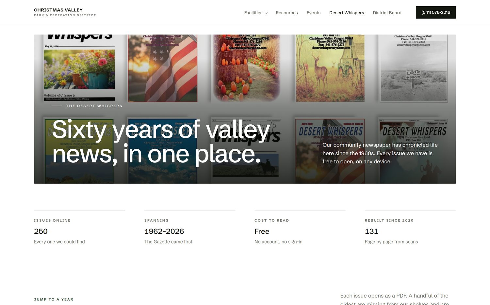
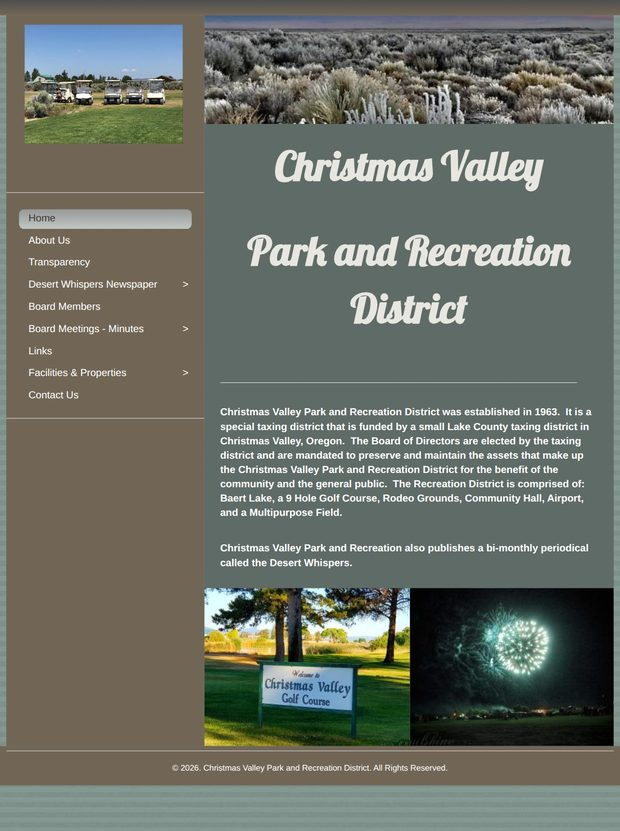
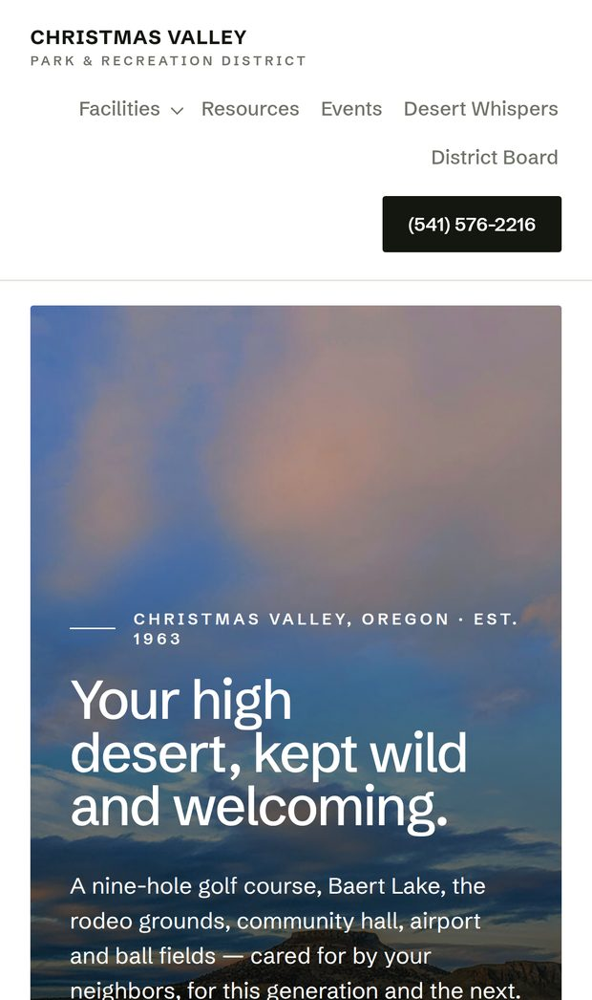
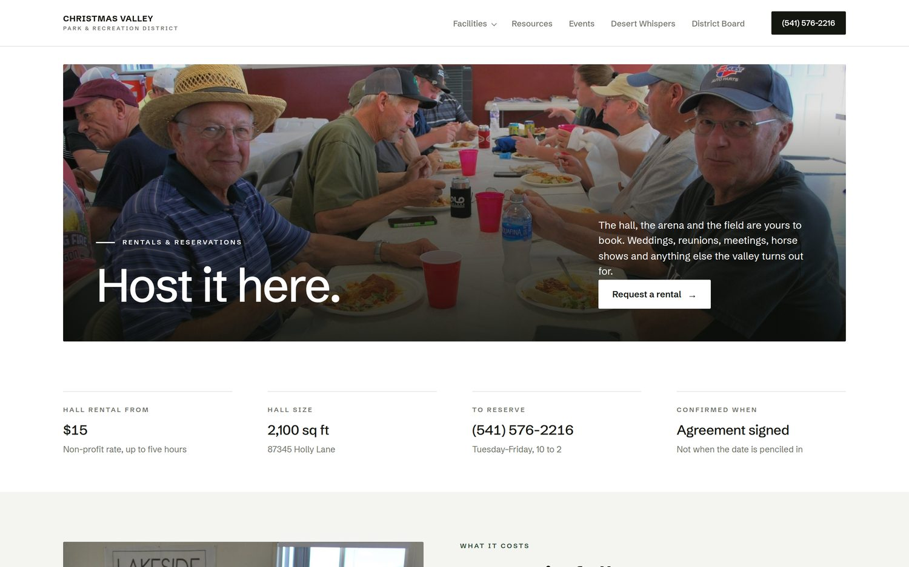

A rebuilt website for the District.
Over the past few months I rebuilt the District's website as a personal project, including gathering every issue of the Desert Whispers I could find into one place. This is a walkthrough of what's there, so the board can look it over together.
I grew up here, and the paper mattered to me.
When the District lost access to its Facebook page, six years of the Desert Whispers went with it. Copies were scattered across community groups, old servers and the Internet Archive. I started pulling them back together, and once I had them, they needed somewhere to live.
So the rest of the site followed. None of this was asked for and none of it obligates the District to anything. It seemed better to build the thing and show it than to describe it, so that's what this is.
Sixty-four years of the paper, in one place.
Every issue I could locate is on the site as a PDF that opens on any device, with no account and no sign-in. Issues from 2020 onward were rebuilt page by page from scans. Issues from the 1960s through the 1980s came back from the Internet Archive.

The same page, on the same phone.
The current site was built at a fixed desktop width, so a phone shrinks the whole layout down rather than reflowing it. The rebuilt site is laid out for the screen it's actually on.


Both screenshots taken at the same phone size on September 18, 2026.
What the current site does today.
I went through every page of cvparkandrec.com again this week rather than relying on older notes. These are the things a resident runs into. Most of them come from the website builder the site sits on, which is a discontinued product, not from anything anyone did wrong.
- 121 of the 229 newspaper issues listed can't be opened. They appear on the year pages as plain text with no link behind them. All of 2012, 2013 and 2015 are like this, and 22 of the 24 issues in 2018.
- The 2021, 2022, 2023 and 2024 newspaper pages are empty. The pages load, but there's nothing on them. The newest issue that opens anywhere on the site is June 15, 2020.
- The newest board minutes posted are June 11, 2024. There's no 2022 page, and no 2025 or 2026 page. Nine older meeting dates are listed without links.
- The September 12, 2023 minutes link opens the December 12 file. The correct September file is already on the server. This one is a single link correction, not a missing document.
- The Transparency page has no budget, audit or public records documents. It has the mission statement. For an Oregon special district this is probably the item worth looking at first, independent of any website decision.
- The archive files are still served from the old cvparkandrec.org address. A redirect currently carries them through, so they work today. If that older registration ever lapses, most of the archive stops opening at once.
- Four pages still carry the builder's placeholder footer. Most of the site now reads "© 2026. Christmas Valley Park and Recreation District," which is recent. About Us, Links, Airport and Multipurpose Field still say "My company."
- A browser warning banner shows to every visitor. "Your browser version is outdated." It's part of the old builder's template and appears no matter what browser someone is using.

What's on the rebuilt site.
The pages below are built and filled. Content for the individual facility pages is still being written, and those are noted at the end.
Home
Office hours, phone, the next board meeting and hall rental rates are the first things on the page, because those are what people come looking for.

Facilities
The six properties the District looks after, each one opening to a page of its own rather than a shared list.

Rentals
The community hall and conference room rate schedule, the deposit, the heater charge, and how to ask for a date, in one place.

Events
A hand-kept list pulled from the latest issues of the paper. Bingo night, the food bank, the Boosters, the board meeting. The office updates it when the paper comes out.

Board and minutes
Every set of minutes on one page, grouped by year, with the meeting schedule and public comment information alongside them.

Resources
The phone number list from the Desert Whispers, the landfill and transfer site schedule, and links to the county, BLM, the forest and the chambers.

Advertise in the Whispers
The display ad rate card, deadlines, how to submit, and the free classified policy, so an advertiser can find it without calling the office first.

How the District would keep it current.
This is usually a board's second question, and it deserves a real answer rather than a promise. The three things that change often each have a way to change them that takes a minute and needs no training in software.
A new issue of the paper, twice a month
Name the PDF as its date, 2026-10-01.pdf, and put it in the Desert Whispers folder for that year. That is the entire job. About a minute later it appears on the archive page, filed under the right year, with the date written out properly. Nobody types the date anywhere, and nobody touches a page of the website.
Board minutes, once a month
The same, in the minutes folder. Adding a word to the end of the file name labels it, so 2026-10-13-special.pdf shows up on the site as a Special Meeting without anyone saying so.
Events, rates, the roster, a seasonal notice
These live in small files written in plain words, one subject per file. The events file reads like a list of events, with the date, the name, a sentence, the place and the time. Changing an event means typing over the words. A notice across the top of the site, for the lake freezing or a cancelled meeting, is one word changed from false to true.
There is no content system to log into, no plugins to keep updated, and no software subscription behind any of it that can be discontinued the way the current one was. Every change is kept and every change can be undone, so nothing anyone does in the office can break the site permanently.
A written handbook covers all of it, one page per task, in plain language. If the District would rather not do any of this, it can be handed off instead. The point is that the choice belongs to the board rather than to whoever built the website.
Things worth knowing before anyone leans on it
I'd rather say these up front than have the board find them:
- The six individual facility pages are still being written. They open, but each one currently says so and points to the office. The rates and details exist and are going in; they just aren't on those pages yet.
- The board roster on the site came from the current District website and should be confirmed against the 2026 board before it's shown to the public.
- Nine documents could not be recovered from anywhere. Four 2016 issues of the paper, October 1980, October 15 2019, and three sets of 2016 minutes. Those issues appear to be genuinely gone.
- The advertising rates were read from the rate charts printed in two different issues and cross-checked against each other, but they should still be confirmed by the office before anyone relies on them.
- Minutes from July 2024 forward aren't on the site, because they aren't published anywhere I could find them.
- The site is built and working, but it's mine, not the District's. Nothing here changes anything about the current website.
The site is live and open.
Screenshots only go so far. The archive in particular is worth opening, because the point of it is that the files actually load.
That's all of it. I'm not asking the board for anything, and there's nothing to decide. I built it because the paper is worth keeping and because I like this valley. If it's useful to look at, look at it. If it's useful for more than that someday, you know where to find me.
(541) 419-1973 · shelby.danielle@hotmail.com